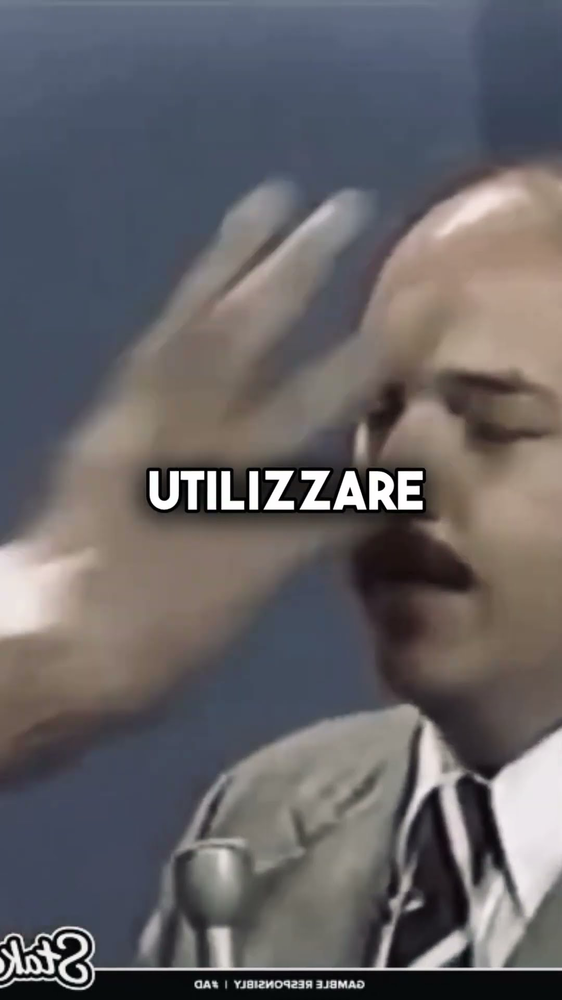

Andre the Giant, curiosità: perché per lui viaggiare in aereo era un'impresa
Andre the Giant era così grande che il bagno di un aereo per lui non esisteva. Ti racconto la curiosità del mio short, cosa c'è di vero, quanto era alto davvero e le altre storie sul gigante più famoso del wrestling.
Andre the Giant non entrava nel bagno di un aereo. Letteralmente.
È la curiosità che ho raccontato nello short qui sopra, e fa sorridere. Ma dietro c'è una cosa seria: per un uomo di quella stazza, ogni giorno era una sfida. Anche solo prendere un volo.
Quanto era grande Andre, davvero
Partiamo dai numeri. Nello short dico circa 2,20 metri e 230 chili. Sono, più o meno, le misure "ufficiali".
La WWE lo presentava a 2,24 metri (7 piedi e 4 pollici) e 236 chili (520 libbre). Ma come tanti nel wrestling, era un po' gonfiato dal marketing. Secondo Biography.com, al massimo della sua stazza era probabilmente sui 2,11 metri. Che comunque, ragazzi, è tantissimo.
Il motivo di quel fisico ha un nome: acromegalia, un eccesso di ormone della crescita. A 12 anni era già alto più di un metro e novanta. Lo stesso problema che, col tempo, gli ha consumato il corpo.
Il bagno dell'aereo: cosa c'è di vero
Un uomo così su un aereo di linea. Sedili minuscoli, corridoi stretti e un bagno grande come un armadio.
Per Andre quel bagno, semplicemente, non era un'opzione. Molti colleghi raccontano che prima di un volo stava attento a cosa beveva e sperava di arrivare a destinazione.
La storia più famosa la racconta Brutus Beefcake: un volo lunghissimo da Tokyo agli Stati Uniti, e a un certo punto Andre non ce la fa più. L'equipaggio deve inventarsi una soluzione di fortuna, lontano dagli altri passeggeri. Nello short parlo di secchi improvvisati. Nei racconti si parla di sacchi o di un vaso da notte, dietro una tenda.
Diciamolo chiaramente: i dettagli cambiano a seconda di chi la racconta, e arrivano quasi tutti da Beefcake. Ma il punto resta vero. Viaggiare, per lui, era un'impresa.
Le altre leggende su Andre
Andre è il re degli aneddoti. Alcuni sembrano inventati, eppure arrivano da gente che c'era.
- Le birre. Ospite da David Letterman nel 1984, disse di averne bevute 117 in una sola volta. Altri colleghi, tra cui Mike Graham e Dusty Rhodes, raccontano cifre ancora più alte.
- Il vino in pullman. Hulk Hogan racconta che durante un viaggio di tre ore si scolò 12 bottiglie di Pouilly-Fuissé.
- Schwarzenegger sul tetto dell'auto. Dopo una cena, Arnold voleva pagare il conto. Andre e Wilt Chamberlain lo sollevarono e lo misero sopra la sua macchina.
- Il cinema. Nel 1987 è Fezzik nel film La storia fantastica (The Princess Bride).
Il campione per un minuto
Sul ring Andre ha fatto storia. WrestleMania III, 1987, contro Hulk Hogan, davanti a un pubblico record. E il 5 febbraio 1988, a The Main Event, vince il titolo WWF contro Hogan grazie al "gemello cattivo" dell'arbitro Hebner.
Solo che lo cede subito a Ted DiBiase. Risultato: per la WWE è il regno più corto di sempre, 1 minuto e 48 secondi. Ne parlo anche nell'articolo su un altro regno lampo, quello di Yokozuna.
Un gigante fragile
Andre René Roussimoff è morto il 28 gennaio 1993 a Parigi, a 46 anni. Poco dopo è stato il primo membro della WWF Hall of Fame.
Per me è questo il bello delle sue storie: fanno ridere, ma ti ricordano che dietro "l'ottava meraviglia del mondo" c'era un uomo che viveva in un mondo costruito troppo piccolo per lui.
Se vuoi la sua storia completa, c'è il mio video La vera storia di Andre the Giant. Altre curiosità le trovi nella rubrica Lo sapevi che e tra i miei Shorts. E se vuoi rivedere i suoi match, WrestleMania comprese, l'archivio WWE è su Netflix: te lo spiego nella guida dove vedere la WWE in Italia.
Tu la conoscevi questa storia? Scrivimelo nei commenti dello short e iscriviti al canale Tony Wrestling.
Fonti:
- André the Giant, Wikipedia (misure, acromegalia, aneddoti di Letterman, Hogan e Schwarzenegger, titolo del 1988, Hall of Fame)
- The 5 shortest WWE Title reigns in history, WWE.com
- Andre The Giant Once Annihilated An Airplane Restroom, OutKick (racconto di Brutus Beefcake)
Domande frequenti
Quanto era alto Andre the Giant?
La WWE lo presentava a 2,24 metri (7 piedi e 4 pollici) per 236 chili. Secondo Biography.com, nel suo periodo di massima stazza era probabilmente intorno ai 2,11 metri. La sua crescita era dovuta all'acromegalia, un eccesso di ormone della crescita.
È vero che Andre the Giant non entrava nel bagno dell'aereo?
Sì, è uno degli aneddoti più raccontati dai colleghi. La storia più famosa la racconta Brutus Beefcake, su un volo dal Giappone agli Stati Uniti, dove l'equipaggio dovette improvvisare una soluzione. I dettagli cambiano a seconda di chi la racconta.
Quando è morto Andre the Giant?
Andre René Roussimoff è morto il 28 gennaio 1993 a Parigi, a 46 anni. Pochi mesi dopo è stato il primo membro della WWF Hall of Fame.